Dassault Mystère Joystick
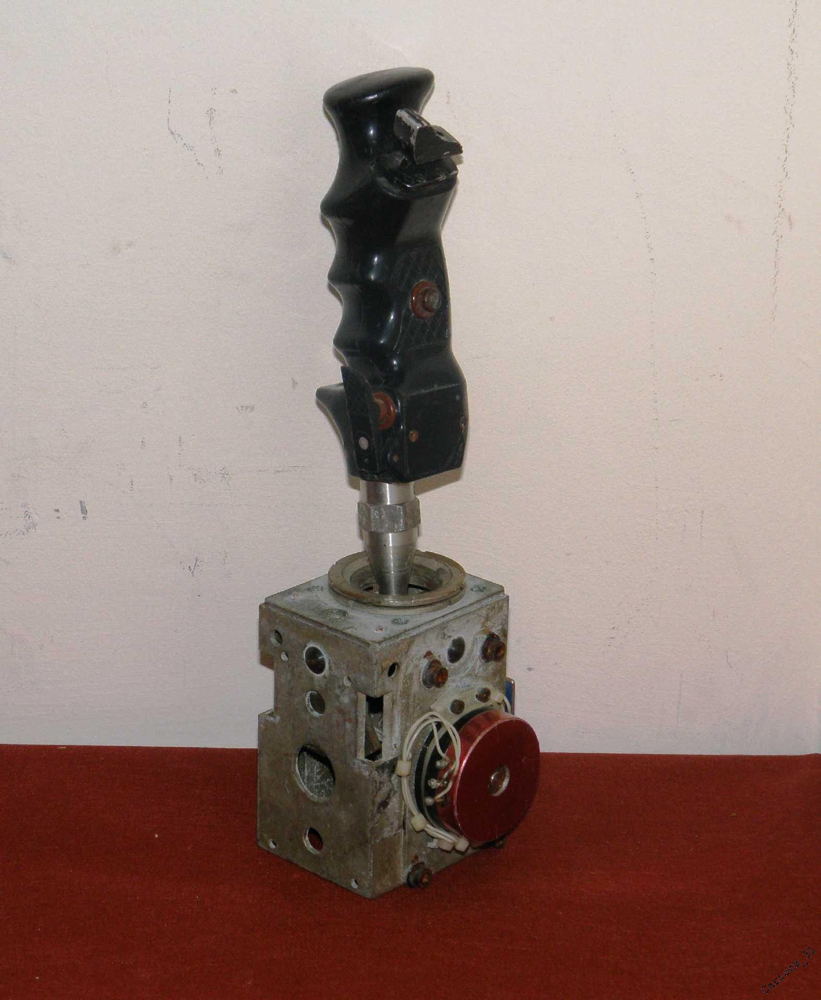
{kind=link}
(Original photo from seller offer)
This project actually started many years ago, when I managed to purchase what been told was "Joystick from old French fighter plane". Back in the day I've planned to use it as a base for upgrade of Logitech WingMan Force 3D - but project somehow got stuck and finally forgotten. Recently I came across this joystick once again. After some digging I was no longer convinced if it indeed originated from real fighter:
This project actually started many years ago, when I managed to purchase what been told was "Joystick from old French fighter plane". Back in the day I've planned to use it as a base for upgrade of Logitech WingMan Force 3D - but project somehow got stuck and finally forgotten. Recently I came across this joystick once again. After some digging I was no longer convinced if it indeed originated from real fighter:
- Seems like it's fly-by-wire (there was just one potentiometer, place for what looked like another one and no obvious place for any mechanical linkage)
- Such kind of joystick, with just 4 buttons, was last present in Dassault Mystère (in service between 1954-1963) - but it was mounted directly to mechanical steering column, no electronics involved.
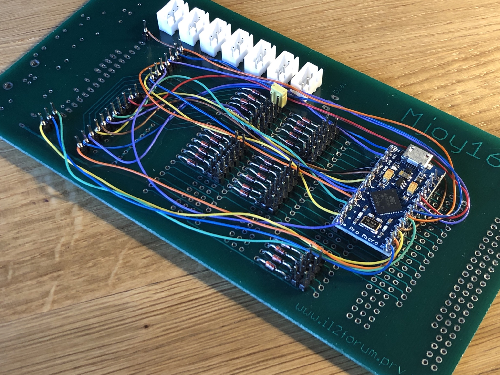
{kind=link}
Electronics and software
This setup requires few words of explanation. Around 10 years ago, back before Arduino, there was DIY joystick
project called MJoy16, based on ATMega16. I was considering build of "auxiliary controller", with multiple switches,
levers and potentiometers for flying simulators - and there was someone in the community selling nicely fabricated
PCB's which I've ordered. Boards came, went to shelf and stayed there.
Fast-forward 10 years: I am building new joystick and there is Arduino-based MJoy2. Obviously it isn't compatible with MJoy16 boards - but after careful analysis I realized that I can still use it as a button-matrix platform. An hour of of wire-wrapping and soldering later I had board ready to connect inputs.
Fast-forward 10 years: I am building new joystick and there is Arduino-based MJoy2. Obviously it isn't compatible with MJoy16 boards - but after careful analysis I realized that I can still use it as a button-matrix platform. An hour of of wire-wrapping and soldering later I had board ready to connect inputs.
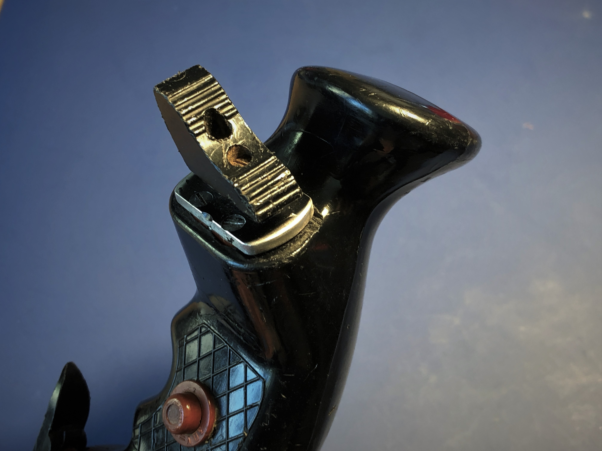
{kind=link}
Original two-state switch
Joystick in it's original state had one primary flaw - it lacked POV switch. I had only one two-state thumb-operated
switch. I thought about providing directional switch of the base operated with left hand, but finally I came to
conclusion that requiring both hands to fly *and* look around will be very inconvenient - imagine not being able to
look around when operating throttle.
This being told, I decided to replace original switch with 3D printed adapter hosting 2 analog axes and one
button - for viewport control and reset.
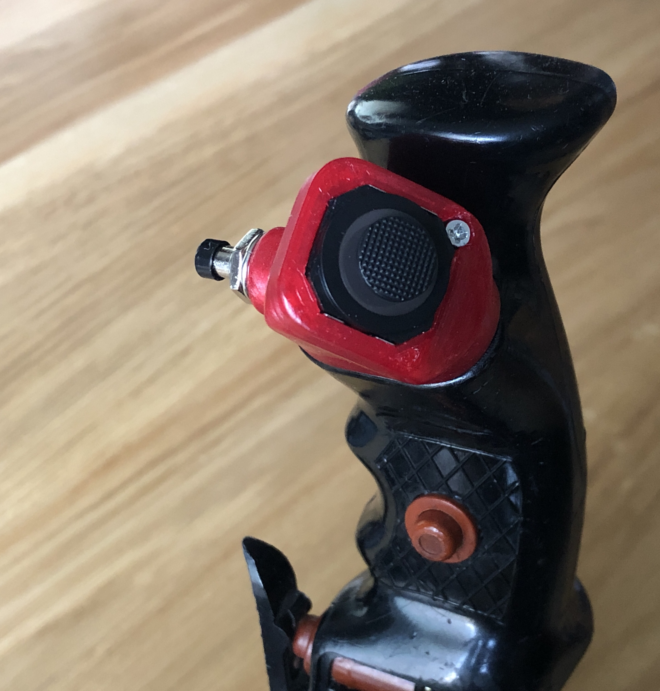
{kind=link}
Custom POV switch assembly
Original switch has been replaced by PSP two-axis analog thumb joystick and button mounted inside 3D printed housing
designed to fit in place of the original.
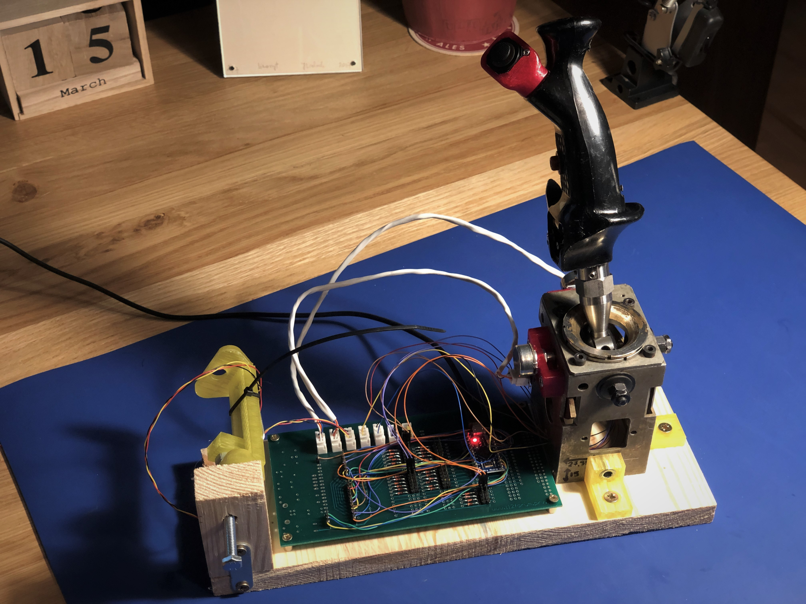
{kind=link}
Simple testbed
Before going any further with the project, I screwed all the basic components on piece of wood just to test it. It
was important to verify that:
- Joystick with subtle centering of only pitch axis feel uncomfortable.
- How does it feel with Cessna-style throttle controls (here mocked by M5 bolt).
Making case and final assembly
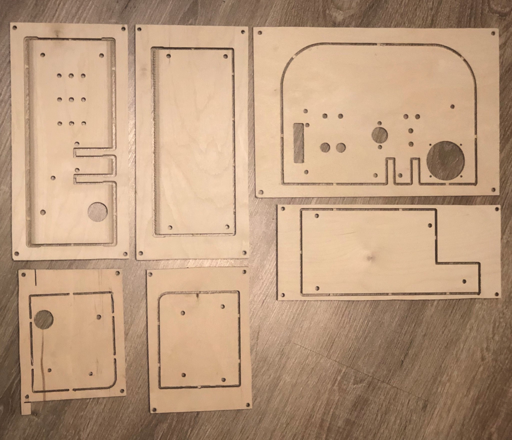
{kind=link}
Cutting case panels
Having whole device designed and assembled in Fusion 360, it made it straightforward to cut all the
necessary panels out of plywood on CNC router. All parts were later cut out of stock, sanded and then waxed to
prevent wood from degradation.
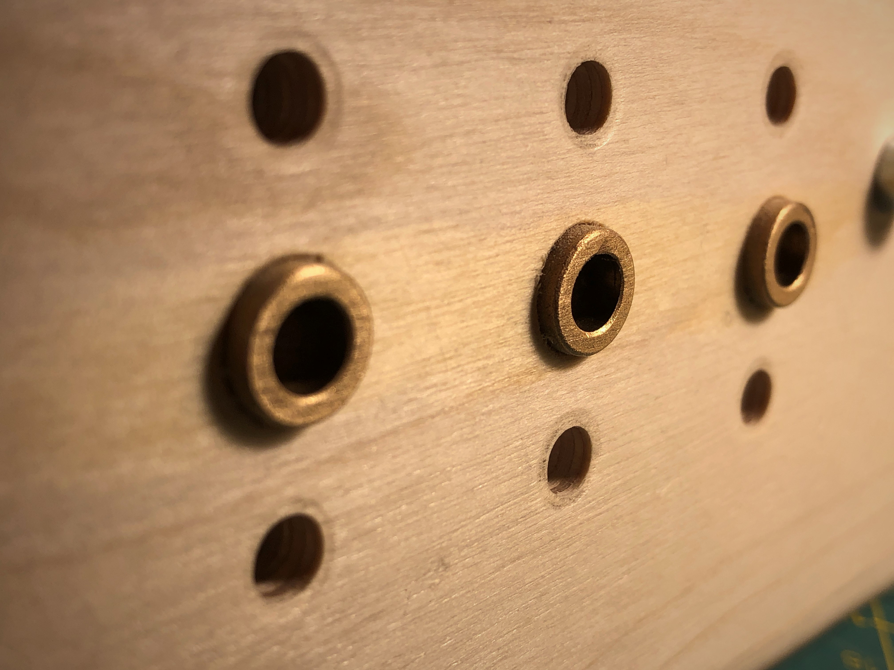
{kind=link}
Throttle, mixture and propeller pitch bushings
To prevent levers from binding when going through tight hole in plywood, I've press-fit self-lubricating bronze
bushings for M6 bolts to slide in. Sliding part of those obviously won't be threaded.
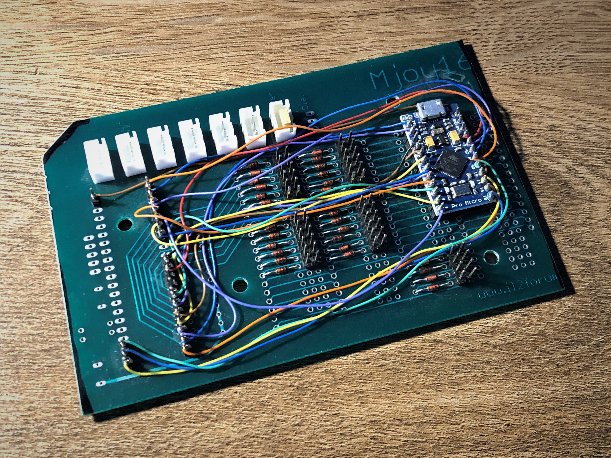
{kind=link}
Trimming electronics board
Before continuing with assembly, I had to precisely trim electronics board of unused parts. This allowed to make
whole package much more compact without sacrificing anything (maybe other than ease of assembly).
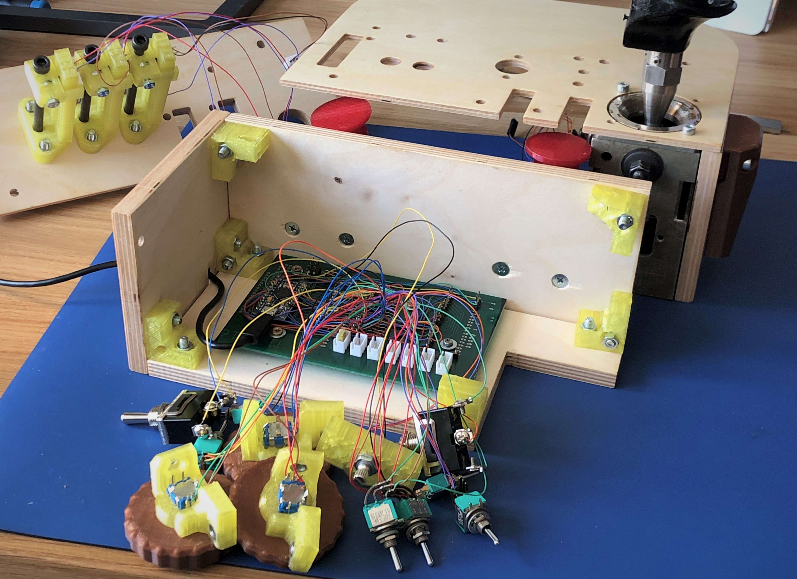
{kind=link}
Wire-wrapping switches
Next step was to make all the wiring and test it one more time before final assembly. I first planned to go with
standard 2.54mm raster "goldpin" plugs, but it made no sense - wire wrapping created solid, reversible connections
without the hassle of having to crimp tenths of connectors only to (hopefully) never see them again.
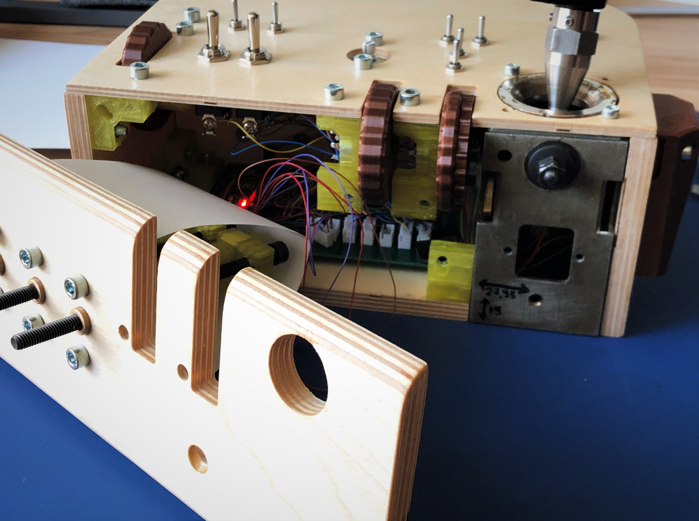
{kind=link}
Final assembly
Time to put everything together. To prevent sliders from catching any loose wires inside I've made simple guards
from sheet of paper.
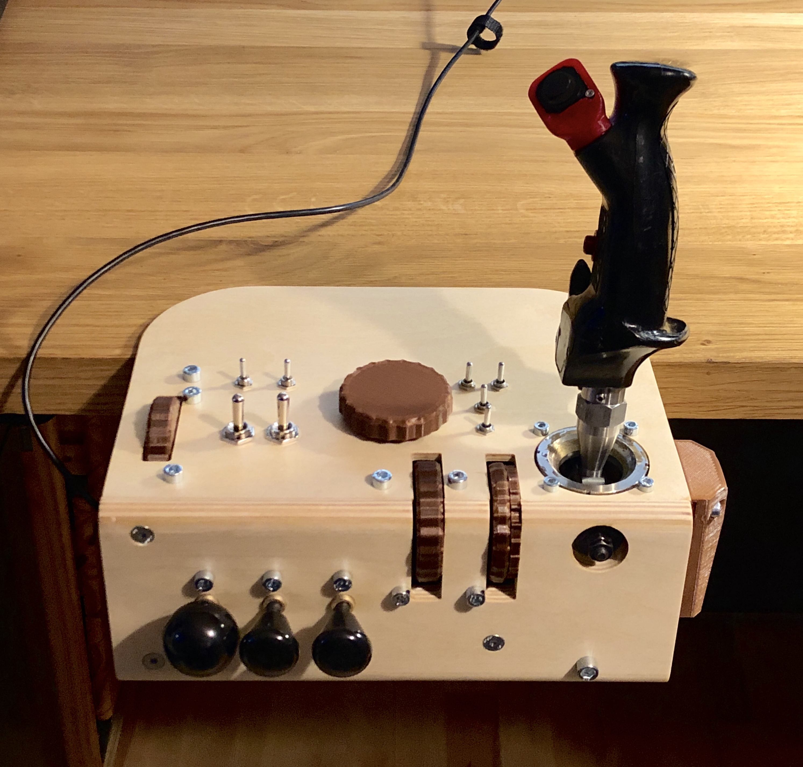
{kind=link}
It required more than one attempt to lay everything together properly, but finallly joystick is completed. I am not
totally satisfied with quality of used encoders - seems like there is possibility for them to stop "in the middle of
movement", causing problems with other buttons in a row - but time will tell. If it becomes annoying, I'll change
them.